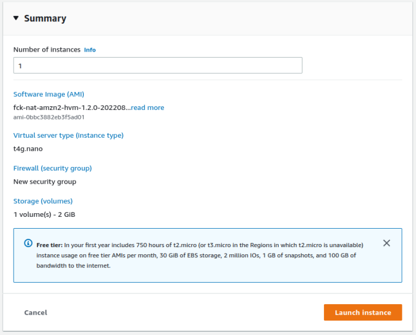

Deploying fck-nat
The most well-supported way to deploy fck-nat with all of its features available out of the box is via CDK. If you're using another Infrastructure-as-code provider, you can still deploy a basic NAT instance with fck-nat, but it is more intensive to support some of fck-nat's additional features.
CDK
fck-nat provides an official CDK module which supports all of fck-nat's features (namely high-availability mode) out-of-the-box. The CDK module is currently available both in Typescript and Python. You can find detailed documentation on Construct Hub. Here's an example use of the CDK construct in Typescript:
const natGatewayProvider = new FckNatInstanceProvider({
instanceType: InstanceType.of(InstanceClass.T4G, InstanceSize.NANO),
});
const vpc = new Vpc(this, 'vpc', {
natGatewayProvider,
});
natGatewayProvider.securityGroup.addIngressRule(Peer.ipv4(vpc.vpcCidrBlock), Port.allTraffic());
That's it! This will deploy your VPC using fck-nat as your NAT provider in high availability mode. This includes all necessary routing configurations and deploys fck-nat in an Autoscaling group to ensure that a new instance is brought up automatically in case the NAT instance is terminated.
You can also deploy fck-nat in non-HA mode using CDK's built-in NatInstanceProvider like so:
const natGatewayProvider = new NatInstanceProviderV2({
instanceType: InstanceType.of(InstanceClass.T4G, InstanceSize.NANO),
machineImage: new LookupMachineImage({
name: 'fck-nat-al2023-*-arm64-ebs',
owners: ['568608671756'],
})
})
const vpc = new Vpc(this, 'vpc', {
natGatewayProvider,
});
natGatewayProvider.securityGroup.addIngressRule(Peer.ipv4(vpc.vpcCidrBlock), Port.allTraffic());
Read more about the NatInstanceProvider construct
Terraform
Doriann Corlouër (RaJiska) maintains the official fck-nat Terraform module over at terraform-aws-fck-nat. Below is a sample of how to use that module and full documentation can be found on the Terraform Registry
module "fck-nat" {
source = "RaJiska/fck-nat/aws"
name = "my-fck-nat"
vpc_id = "vpc-abc1234"
subnet_id = "subnet-abc1234"
# ha_mode = true # Enables high-availability mode
# eip_allocation_ids = ["eipalloc-abc1234"] # Allocation ID of an existing EIP
# use_cloudwatch_agent = true # Enables Cloudwatch agent and have metrics reported
update_route_tables = true
route_tables_ids = {
"your-rtb-name-A" = "rtb-abc1234Foo"
"your-rtb-name-B" = "rtb-abc1234Bar"
}
}
It is also possible to configure fck-nat with out-of-the-box Terraform modules, but you may not be able to leverage all of fck-nat's features.
data "aws_ami" "fck_nat" {
filter {
name = "name"
values = ["fck-nat-al2023-*"]
}
filter {
name = "architecture"
values = ["arm64"]
}
owners = ["568608671756"]
most_recent = true
}
resource "aws_network_interface" "fck-nat-if" {
subnet_id = aws_subnet.subnet_public.id
security_groups = [aws_default_security_group.default_security_group.id]
source_dest_check = false
}
resource "aws_instance" "fck-nat" {
ami = data.aws_ami.fck_nat.id
instance_type = "t4g.nano"
network_interface {
network_interface_id = aws_network_interface.fck-nat-if.id
device_index = 0
}
}
CloudFormation
Note
If you'd be interested in seeing fck-nat published on the CloudFormation registry, give this issue a +1
For brevity, this document assumes you already have a VPC with public and private subnets defined in your CloudFormation template. This example template provisions the minimum resources required to connect fck-nat in your VPC. This is a good option for those that have an existing VPC and NAT Gateway and are looking to switch over.
- A security group allowing ingress traffic from within the VPC and egress out to the internet
- A auto scaling group that creates an EC2 instance using the fck-nat AMI
- A route in the private subnet route table directing traffic to the fck-nat instance.
This snippet assumes the following resources are already defined:
VPC: AnAWS::EC2::VPCresource.PublicSubnet: AnAWS::EC2::Subnetwhich has anAWS::EC2::InternetGatewayattached.PrivateSubnetRouteTable: AnAWS::EC2::RouteTablewith anAWS::EC2::SubnetRouteTableAssociationto aAWS::EC2::Subnet
Steps to deploy:
- Paste your VPC ID, public subnet ID, VPC CIDR block into the parameters. Set the FckNatAMIParameter based on the region fck-nat is deployed to.
- Deploy with CloudFormation
aws cloudformation deploy --force-upload --capabilities CAPABILITY_IAM --template-file template.yml --stack-name FckNat - Add the default route to your route table on the subnet. It is best to do this manually so you can do a seamless cut over from your existing NAT gateway. Go to
VPC > Route Tables > Private route table > Routes > Edit RoutesAdd a 0.0.0.0/0 route pointing to the network interface.
Parameters:
VpcIdParameter:
Type: AWS::EC2::VPC::Id
SubnetIdParameter:
Type: AWS::EC2::Subnet::Id
CIDRParameter:
Type: String
Default: "10.0.0.0/16"
FckNatAMIParameter:
Type: AWS::EC2::Image::Id
Resources:
FckNatInterface:
Type: AWS::EC2::NetworkInterface
Properties:
Description: FckNat Gateway Interface
SubnetId: !Ref SubnetIdParameter
GroupSet:
- !GetAtt [FckNatSecurityGroup, GroupId]
SourceDestCheck: false
FckNatAsgInstanceProfile:
Type: AWS::IAM::InstanceProfile
Properties:
Roles:
- !Ref FckNatRole
FckNatLaunchTemplate:
Type: AWS::EC2::LaunchTemplate
DependsOn: FckNatRole
Properties:
LaunchTemplateName: FckNatLaunchTemplate
LaunchTemplateData:
ImageId: !Ref FckNatAMIParameter
InstanceType: t4g.nano
NetworkInterfaces:
- DeviceIndex: 0
AssociatePublicIpAddress: true
Groups:
- !GetAtt [FckNatSecurityGroup, GroupId]
IamInstanceProfile:
Name: !Ref FckNatAsgInstanceProfile
UserData:
Fn::Base64: !Sub |
#!/bin/bash
echo "eni_id=${FckNatInterface}" >> /etc/fck-nat.conf
service fck-nat restart
FckNatAsg:
Type: AWS::AutoScaling::AutoScalingGroup
Properties:
MaxSize: "1"
MinSize: "1"
DesiredCapacity: "1"
LaunchTemplate:
LaunchTemplateId: !Ref FckNatLaunchTemplate
Version: !GetAtt FckNatLaunchTemplate.LatestVersionNumber
VPCZoneIdentifier:
- !Ref SubnetIdParameter
Tags:
- Key: Name
Value: fck-nat
PropagateAtLaunch: true
UpdatePolicy:
AutoScalingScheduledAction:
IgnoreUnmodifiedGroupSizeProperties: true
FckNatSecurityGroup:
Type: AWS::EC2::SecurityGroup
Properties:
GroupDescription: Security Group for FckNat
SecurityGroupIngress:
- CidrIp: !Ref CIDRParameter
IpProtocol: "-1"
SecurityGroupEgress:
- CidrIp: 0.0.0.0/0
Description: Allow all outbound traffic by default
IpProtocol: "-1"
VpcId: !Ref VpcIdParameter
FckNatRole:
Type: AWS::IAM::Role
Properties:
AssumeRolePolicyDocument:
Statement:
- Action: sts:AssumeRole
Effect: Allow
Principal:
Service: ec2.amazonaws.com
Version: "2012-10-17"
Policies:
- PolicyName: AttachNatEniPolicy
PolicyDocument:
Statement:
- Action:
- ec2:AttachNetworkInterface
- ec2:ModifyNetworkInterfaceAttribute
Effect: Allow
Resource: "*"
Version: "2012-10-17"
- PolicyName: AssociateNatAddressPolicy
PolicyDocument:
Statement:
- Action:
- ec2:AssociateAddress
- ec2:DisassociateAddress
Effect: Allow
Resource: "*"
Version: "2012-10-17"
Manual - Web Console
The following instructions can be used to deploy the fck-nat AMI manually.
**Summary: **
1. Launch fck-nat AMI
2. Modify ENI to disable source/dest check
3. Modify the private route table, default route to fck-nat target
4. Validate
NOTE: The following example uses fck-nat AMI version 1.2.0 for arm64 on t4g.nano.
EC2 Instance Launch
- Visit the EC2 service in your preferred region: EC2 Link
- Click Launch Instances

- Give the instance a name

- Search for AMIs owned by "568608671756"

- Select the ARM64 1.2.0 fck-nat AMI


- Select Instance Type t4g.nano

- Modify Network Settings
- Select VPC
- Place in public subnet, ensure Public IP is assigned
- Attached Security group that permits
inbound: entire VPC CIDR inbound, all traffic
outbound: 0.0.0.0/0, all traffic

- Leave Storage at 2GB

- Review and launch

Wait for Launch
Modify EC2 Network Interface
We must modify the ENI attached to the newly launched instance to disable source/destination checks, this allows us to route through (actually hairpinning) the instance.
1. Click on the ENI of the instance

2. Select ENI, Click Actions -> Change source/dest. check

3. Disable Source/Dest check and Save

Modify VPC Routing Table
The VPC routing table associated with your private subnets must be modified to route traffic matching the default route to the new fck-nat instance.
1. Open the VPC Service, Route Tables

2. Open the private route table, edit routes

3. Add a default route, target: fck-nat instance

Validate
Log into an instance in a private subnet and validate the external IP is the public IP assigned to your fck-nat instance.